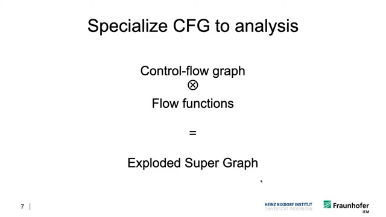
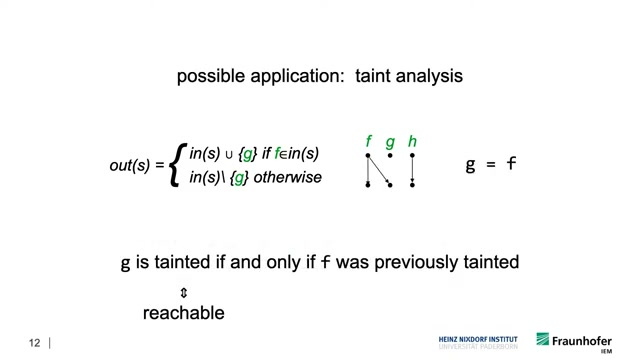
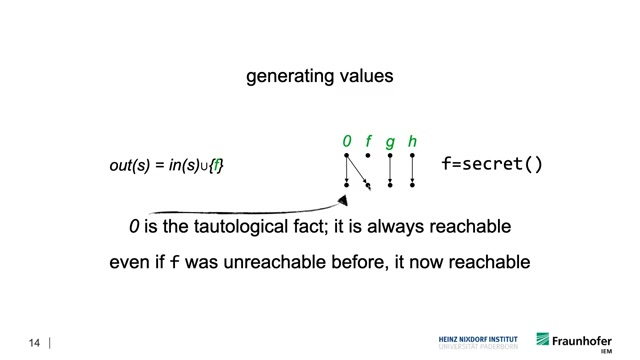
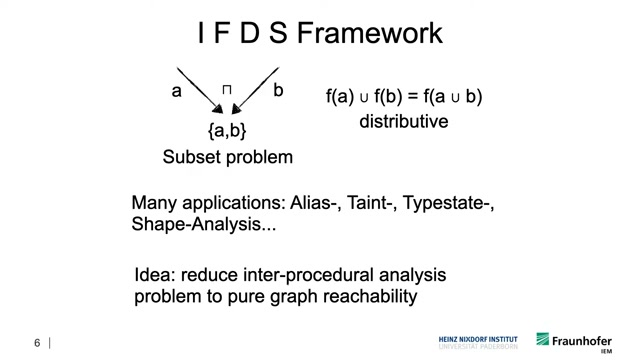

The Problem: Where Did This Value Come From?
Consider this code. At the print(x) line, which assignment to x could have produced the value we're printing?
void main() {
x = 1; // definition d1
x = 2; // definition d2
foo();
print(x); // which definition reaches here?
}
void foo() {
x = 3; // definition d3
}
The answer is d3 — the assignment inside foo(). But here's where it gets tricky:
void main() {
x = 1; // d1
if (condition) {
foo(); // might set x = 3
}
print(x); // d1 or d3?
}Now both d1 and d3 could reach the print. We need to track all possible definitions through all possible paths — including paths that go through function calls.
This is reaching definitions: at each program point, which assignments might have produced each variable's current value? It's the foundation for dead code elimination, constant propagation, and bug detection.
The Key Insight: Explode the Graph
Here's the clever trick: instead of asking "what facts are true at this line?", we build a graph where each node represents a specific fact at a specific line.

Think of it like this: instead of one maze with colored markers, we build a separate maze for each color. Now finding "does red reach the exit?" is just pathfinding.
The Core Idea: "Is variable X tainted at line 20?" becomes "Is there a path to node (line 20, X) in our graph?"
How Facts Flow: Gen, Kill, Propagate
The edges in our graph encode what happens to facts at each statement:
- Generate:
x = secret()creates taint on X (new edge appears) - Kill:
x = 0removes taint on X (edge disappears) - Propagate:
y = xcopies taint from X to Y (edge connects them)


Handling Function Calls Correctly
The hardest part is function calls. When main() calls sanitize(), we need to:
- Pass facts from the call site to the function entry
- Analyze what the function does
- Bring the results back to the right call site
That last part is crucial. If foo() calls sanitize() and bar() also calls sanitize(), we can't mix up their results. IFDS handles this by only following paths that match calls with their returns—like matching parentheses.

IDE: When You Need Values, Not Just Yes/No
IFDS answers yes/no questions: "Is X tainted?" But sometimes you need values: "What is X's value?"
IDE extends IFDS to track values. Instead of just knowing "X is constant," IDE tells you "X equals 42." It does this by attaching small functions to each edge that transform values as they flow.
IFDS vs IDE: IFDS asks "Does this fact reach here?" IDE asks "What value does this fact have here?"
Real-World Impact: FlowDroid
FlowDroid uses IFDS to find privacy leaks in Android apps. It answers: "Can data from your contacts/location/photos reach the internet?"
FlowDroid achieves 93% recall and 86% precision—it finds most real leaks while keeping false alarms low. It powers security analysis for millions of Android apps.
Key Takeaways
- Graph reachability: IFDS turns "can bad data reach here?" into "is there a path in this graph?"
- Exploded graph: Each node is (program point, fact), so pathfinding gives us dataflow answers
- Correct call handling: Paths must match calls with their returns, like balanced parentheses
- IDE for values: When yes/no isn't enough, IDE tracks actual values through the program
- Practical impact: FlowDroid and similar tools use this to find real security bugs
References
- Reps, Horwitz, & Sagiv. Precise Interprocedural Dataflow Analysis via Graph Reachability. POPL 1995. [PDF]
- Arzt et al. FlowDroid: Precise Taint Analysis for Android Apps. PLDI 2014. [PDF]
- Video: Intro to IFDS by Eric Bodden's group